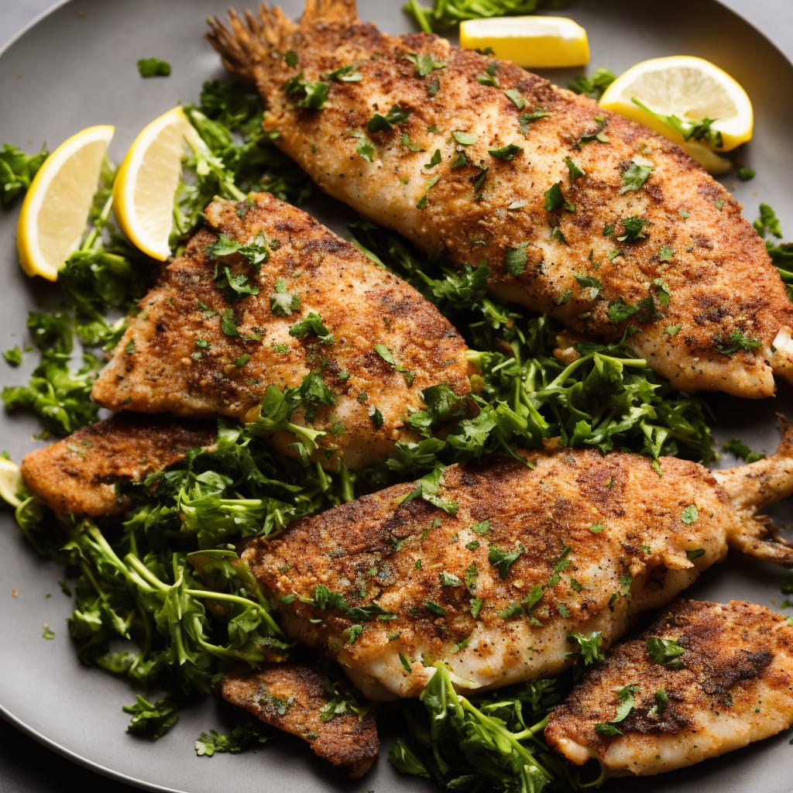

Baked Grouper

Description
This recipe is great for grouper fillets, but you can also use it with
tilapia. It's both healthy and flavorful! You don't have to love fish
to love this dish. Serve it with rice and cole slaw to complete the meal.
Ingredients
- 4 (4 ounce) fillets grouper
- ¼ cup fresh lime juice
- 1 pinch red pepper flakes (to taste)
- salt and ground black pepper to taste
- 1 tomato, thinly sliced
- 1 onion, thinly sliced
- 1 green bell pepper, thinly sliced
Steps
-
Arrange the grouper on a plate. Drizzle the lime juice over the
fillets and season with salt, pepper, and red pepper flakes.
Cover with plastic wrap and refrigerate overnight or 8 hours.
-
Preheat oven to 350 degrees F (175 degrees C). Lightly grease a
baking dish.
-
Lay the fillets in the prepared baking dish in a single layer.
Arrange the tomato slices, onion slices, and bell pepper slices
atop the fillets. Cover with aluminum foil.
-
Bake in preheated oven until the fish flakes easily, about 1 hour.